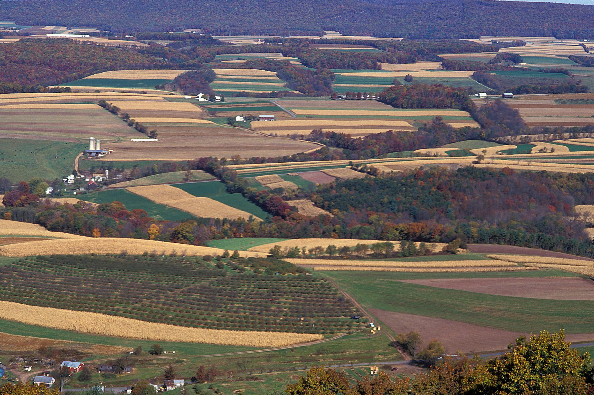
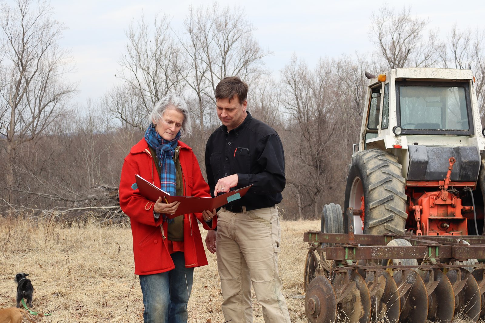

Expanding your livestock operation
Planning additional animals, facilities, manure handling, or grazing infrastructure.
Agricultural Conservation Planning
Kluthe Environmental Solutions helps farmers and landowners understand conservation requirements, evaluate practical options, and develop plans that fit their operation — whether they are just beginning to explore a project or already have an NRCS contract in hand.
Agronomy • Conservation Planning • NRCS/TSP Support

Start With the Farm
You do not need to know what plan you need. Start with what you are trying to accomplish.
Planning additional animals, facilities, manure handling, or grazing infrastructure.
Improving storage, application, heavy-use areas, or production-area management.
Addressing soil health, erosion, nutrient efficiency, compaction, or declining productivity.
Improving pasture use, fencing, watering, forage management, or livestock movement.
Evaluating the transition process, production changes, conservation needs, and USDA requirements.
Developing practical approaches to pest pressure while protecting productivity and natural resources.
Not sure what comes next? KES can help you understand the technical services, requirements, deadlines, and how the pieces fit together.
Making Sense of the Process
Funding programs, technical requirements, engineering, nutrient management, conservation practices, and implementation schedules all have to fit together.
KES helps you make sense of the process, evaluate practical options, and develop a clear path forward for your operation.
Services
KES works across the farm to help connect agricultural goals, conservation needs, technical requirements, and available programs.

Planning for manure, livestock facilities, nutrient use, runoff, and production-area concerns.
Soil health, pest management, organic transition, nutrient efficiency, and practical agronomic planning.
Whole-farm planning, grazing management, erosion and resource concerns, and land-treatment strategies.
NRCS/TSP technical deliverables, contract interpretation, project coordination, field evaluation, mapping, and coordination with engineers and specialists.
How We Work
We start with your farm, your goals, and the problem you are trying to solve.
We look at technical requirements, practical alternatives, and available programs.
We bring the pieces together into a clear path forward that fits the operation.
Good planning should make the next decision clearer.

Why KES
KES was built around a simple idea: conservation planning should help farmers make better decisions, not add another layer of confusion.
John spent much of his career helping farmers solve conservation problems from inside NRCS. Today, KES brings that experience directly to farmers and landowners — combining an understanding of agriculture, conservation programs, and technical requirements with practical planning at the farm level.
The goal is not simply to complete the required paperwork. It is to help you understand your options, make informed decisions, and develop a plan that works for your operation.
Experience from inside the conservation system — now working directly for the client.
Field-level experience working directly with farmers and conservation programs.
Qualified to develop NRCS conservation plans and technical deliverables.
Agronomic expertise supporting practical soil, crop, and nutrient decisions.
B.S. in Agronomy • M.S., University of Missouri
Client Experience
The best measure of our work is whether clients feel understood, informed, and confident moving forward.
I purchased a preserved farm in 2019 and began working with NRCS shortly thereafter. It was quite a learning curve for me, and working with KES on a CNMP was probably the easiest project to date. John understood the NRCS requirements and navigated within their restrictions. However, he was able to communicate with me at a level I could understand, which allowed me to make good long-term decisions for the farm.
Working with Kluthe Environmental Solutions is pleasant, productive, and helped move my farm management goals forward. John took the time to understand my operation’s context, my growing philosophy, and my production goals to develop a clear and simple-to-implement plan in line with NRCS practice standards and USDA Organic regulations. Working with KES gives me an extra tool in my “tool belt” and a trusted advisor for my nutrient management and farm conservation planning needs!
Working with Kluthe Environmental Solutions was a great experience from start to finish. The communication was outstanding; John was always responsive and kept us informed throughout the process. He made everything easy to understand. We truly appreciate the work and expertise and highly recommend KES.
The People Behind KES
Principal Consultant
John is the primary client contact and leads conservation planning, field assessment, and project coordination for KES. The focus is not simply on producing a plan, but on working through the planning process with the farmer — understanding the operation, evaluating practical options, and making informed decisions together. John then helps carry those decisions through NRCS and other technical requirements from planning through implementation.
Ecology & Sustainability Advisor
Brandy contributes ecological and sustainability perspective to selected KES projects and provides technical and organizational support to the business.
Terrain Engineering, LLC
Matt is a licensed professional engineer and NRCS Technical Service Provider for engineering practices. Through Terrain Engineering, LLC, he works with KES on projects involving agricultural structures, site development, engineering design, and technical implementation support.
Goldenbaum Baill Engineering, Inc.
Eric is a licensed professional engineer with Goldenbaum Baill Engineering, Inc. His work includes site planning, grading and drainage, stormwater design, hydrologic analysis, and related civil engineering. He works with KES on structure drawings, site plans, and engineering coordination for agricultural projects.
KES also works with additional independent specialists when a project requires expertise outside our core team.
Start a Conversation
Whether you are starting with a problem on the farm, considering a conservation project, or already have an NRCS contract in hand, you do not need to know exactly what service or plan you need before contacting KES.
Start with what you are trying to accomplish.
Tell us a little about your operation and what you are working through, and we can talk about the options and what a practical next step might look like.